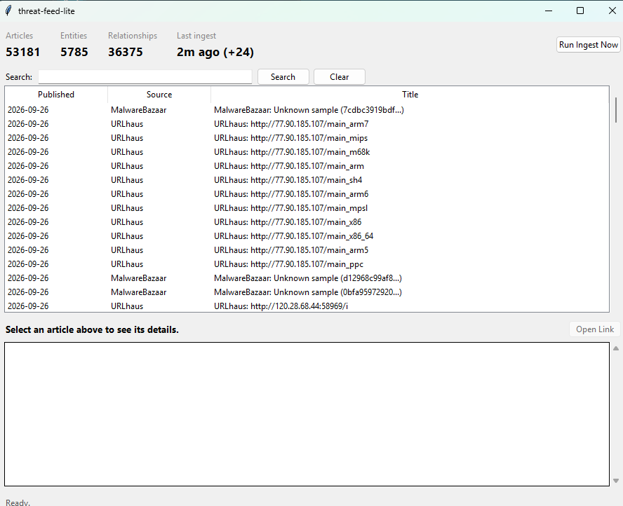
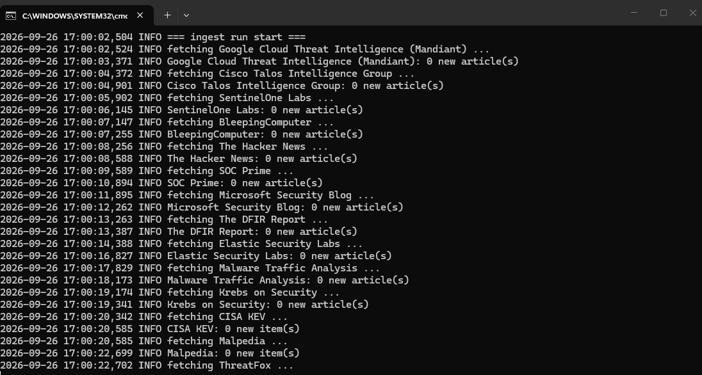

The problem
I'd built a full OpenCTI instance — Docker Compose, a VM with 28GB of RAM, a dozen connectors — and it worked, but it was more infrastructure than a single analyst needs for day-to-day intelligence gathering. Standing it up taught me a lot; running it long-term wasn't worth the overhead.
What I built instead
threat-feed-lite runs directly on my desktop — no VM, no web app. It ingests feeds into SQLite with entity and relationship extraction, has a small native Tkinter interface, and connects to Claude Desktop over MCP so I can query and correlate the dataset in plain language instead of hand-writing SQL. Findings get saved as local markdown reports. On top of that, I built a repeatable workflow for Claude to run against the dataset: gather everything relevant to a topic and map how the actors, malware, and techniques connect, tier each finding by recency and confidence, report back before writing anything, and only then populate a formatted hunt report once I've signed off on scope.

Keeping it running
Ingestion is scheduled hourly through Windows Task Scheduler, tuned to skip cleanly if the machine is asleep and catch up on the next run rather than forcing a wake.
